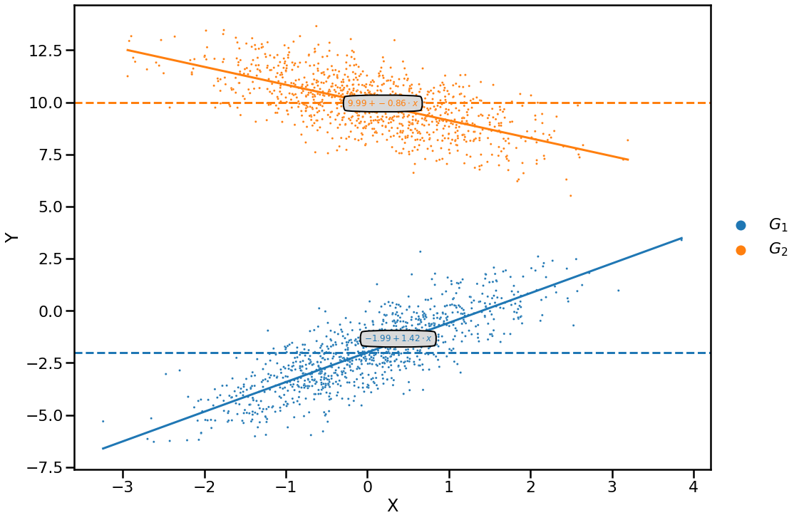

Interpreting the coefficients of a linear regression
A regression coefficient describes how much the response variable changes for a unit change of a covariate while all other covariates remain constant.
In this notebook, we will deepen this intuition with a hands-on example.
[1]:
import numpy as np
import pandas as pd
import statsmodels.formula.api as smf
import seaborn as sns
import matplotlib.pyplot as plt
[2]:
sns.set_context('poster')
Generate data
We generate synthetic data using a form of structural equation modeling. This way, we can check whether we are able to recover the coefficients.
[3]:
N = 1000
beta_g1 = 1.4
beta_g2 = -0.8
mean_g1 = -2
mean_g2 = 10
[4]:
np.random.seed(42)
X = np.random.normal(size=N * 2)
Y = np.r_[
beta_g1 * X[: int(len(X) / 2)] + np.random.normal(mean_g1, size=N),
beta_g2 * X[int(len(X) / 2) :] + np.random.normal(mean_g2, size=N),
]
group = ['$G_1$'] * N + ['$G_2$'] * N
[5]:
df = pd.DataFrame({'X': X, 'Y': Y, 'group': group})
df['group'] = df['group'].astype('category')
df.head()
[5]:
| X | Y | group | |
|---|---|---|---|
| 0 | 0.496714 | -1.979778 | $G_1$ |
| 1 | -0.138264 | -2.338089 | $G_1$ |
| 2 | 0.647689 | -1.885656 | $G_1$ |
| 3 | 1.523030 | -0.175720 | $G_1$ |
| 4 | -0.234153 | -4.221429 | $G_1$ |
Fit model
The model:
\[Y \sim \beta_0 + \beta_1 \cdot group + \beta_2 \cdot X + \beta_3 \cdot X \cdot group\]
[6]:
mod = smf.ols(formula='Y ~ X * group', data=df)
fit = mod.fit()
Investigate result
Retrieve coefficients
[7]:
res = fit.summary()
res.tables[1]
[7]:
| coef | std err | t | P>|t| | [0.025 | 0.975] | |
|---|---|---|---|---|---|---|
| Intercept | -1.9946 | 0.032 | -62.740 | 0.000 | -2.057 | -1.932 |
| group[T.$G_2$] | 11.9799 | 0.045 | 266.149 | 0.000 | 11.892 | 12.068 |
| X | 1.4222 | 0.032 | 43.793 | 0.000 | 1.359 | 1.486 |
| X:group[T.$G_2$] | -2.2785 | 0.046 | -50.067 | 0.000 | -2.368 | -2.189 |
[8]:
coefs = fit.params
coefs
[8]:
Intercept -1.994595
group[T.$G_2$] 11.979866
X 1.422225
X:group[T.$G_2$] -2.278550
dtype: float64
Understand their meaning
[9]:
fitted_beta_g1 = coefs['X']
fitted_beta_g2 = coefs['X'] + coefs['X:group[T.$G_2$]']
fitted_mean_g1 = coefs['Intercept']
fitted_mean_g2 = coefs['Intercept'] + coefs['group[T.$G_2$]']
[10]:
pd.DataFrame(
{
'label': ['beta_g1', 'beta_g2', 'mean_g1', 'mean_g2'],
'true_value': [beta_g1, beta_g2, mean_g1, mean_g2],
'fitted_value': [
fitted_beta_g1,
fitted_beta_g2,
fitted_mean_g1,
fitted_mean_g2,
],
}
)
[10]:
| label | true_value | fitted_value | |
|---|---|---|---|
| 0 | beta_g1 | 1.4 | 1.422225 |
| 1 | beta_g2 | -0.8 | -0.856325 |
| 2 | mean_g1 | -2.0 | -1.994595 |
| 3 | mean_g2 | 10.0 | 9.985271 |
[11]:
def annotate_plot(space, mean, beta, color):
values = mean + beta * space
ax.plot(space, values, color=color)
ax.axhline(mean, ls='dashed', color=color)
mid = len(space) // 2
ax.text(
space[mid],
values[mid],
f'${mean:.2f} + {beta:.2f} \cdot x$',
color=color,
size=12,
bbox=dict(boxstyle='round4,pad=.5', fc='0.85'),
ha='center',
)
[12]:
plt.figure(figsize=(16, 12))
ax = sns.scatterplot(x='X', y='Y', hue='group', data=df, s=10)
sub = df.loc[df['group'] == '$G_1$', 'X']
annotate_plot(
np.linspace(sub.min(), sub.max()),
fitted_mean_g1,
fitted_beta_g1,
sns.color_palette()[0],
)
sub = df.loc[df['group'] == '$G_2$', 'X']
annotate_plot(
np.linspace(sub.min(), sub.max()),
fitted_mean_g2,
fitted_beta_g2,
sns.color_palette()[1],
)
plt.legend(bbox_to_anchor=(1, 0.5), loc='center left', frameon=False)
[12]:
<matplotlib.legend.Legend at 0x10ce91f10>
